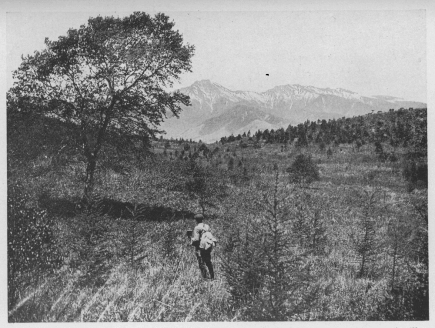
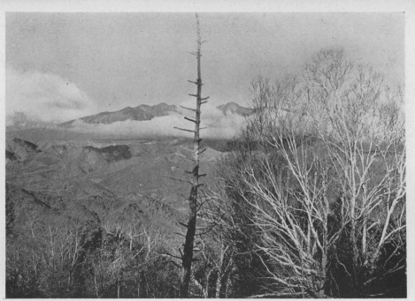
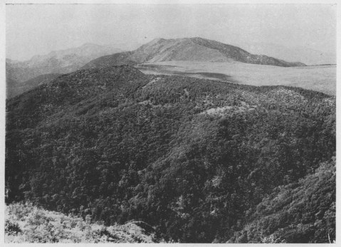

| 高原 | |
| 木暮 理太郎 | |
| (2015) | |
高原
木暮理太郎
八ヶ岳の裾野ほど高原に富んでいる所は、火山の多い我国にも稀であろうと思う。殊に蓼科山あたり迄を引括
めた八ヶ岳火山群となれば、恐らく他に之
と比肩す可
きものはあるまい。井出ノ原や念場
ヶ原或は野辺山原というように、特別の名称を持っている場所を除いても、広さに於て少し劣るだけで、至る所に美しい高原が展開している。富士山の西側に在る間遠ノ原又
は朝霧ヶ原などは、野辺山原よりも広いと思われるが、高原の趣致は寧ろ乏しいというてよい。それよりも上吉田の南方附近から山中湖畔にかけての裾野の方が高原らしい気分に浸れる。浅間山の六里ヶ原は広いことは広いが、なぜか親しさ懐しさに欠けているように思われるのは、其
生成が新しいのと、絶えず威嚇するように烟を噴き出している活火山の姿を、近く仰いでいる為の気のせいであるかも知れぬ。尤も二度上
のあたりは、西にある三方ヶ峰や湯の丸山附近と共に、私の好きな場所の一である。

●野辺山原と八ヶ岳
私は唯
漫然と高原の文字を使用しているが、一体高原と呼ばれる標準の高さは、どの程度をさしていうのであろうか、私はまだ判然たることを知らない。しかし私の好みからいえば、少くとも最低千米以下であってはならないように想う。高ければ高い程よい。千米以下では、平野に生ずる植物、特にそれが景観の上から見て大切である二、三の黒木、たとえば杉や赤松などが植林されたり侵入したりして、丘陵や岡阜
と択
ぶ所がなくなる虞
がある。杉は主として移植されるものであるから別とし、赤松は平地に在りて風景上の一大要素であるが、これが原上に挺立していることは、たとえ如何に豪健雄大な景趣であるにしても、高原に生えることだけは遠慮してもらいたい気がする。私は精進湖畔の赤松林を見る度
に、これがせめて樅
ででもあってくれたならばと思わぬことはない。私が富士北側の裾野に高原としての不満を感ずるのはこの為である。前に述べた八ヶ岳の念場ヶ原や野辺山原などは、千米を遥
に超えているにも拘
らず、尚お所々に赤松が見られるのは私としては甚だ遺憾である。勿論緯度の高低に因
って、其土地の樹種は異なるであろうが、やはり同様のことがいえるのではなかろうかと思う。斯様
な考は、畢竟
私が山にのみ拘泥していて、高原を考えるにも山から離れて観察することを知らないからだと非難されても一言もない。
高原には植物はなくとも、高原たるに変りはあるまい。しかし賽ノ河原のように岩許
りごろごろしていたり、練兵場のように砂塵が舞い上ったりするのでは、其
存在価値はあらゆる生物にとりて零である。せめて美しい草原でありたい。之
に配するに落葉松や白樺などの木立があれば更によく、若
し原の一隅に栂
の林でもあって、水が流れているか清水が湧き出していれば一層よいのである。八ヶ岳の高原では、其中を或は其一方を渓流が潺湲
として流れている所が多い。或る高原では渓流の代りに、或は之に加うるに、湖水や池沼を湛えたり、又
は湿原を成している所もある。其代表的のものは尾瀬であろう。日光の戦場ヶ原や信州の戸隠ノ原、又は鬼怒沼原も稍々
之に類している。私には未知の地であるが、九州の久住
高原はこの例に入る可
きものであろう。未知の地といえば北海道の沼ノ原なども、強く心を惹かれずにはいられない。八甲田山の西から南にかけても亦
これに似た所があるが、藪が深いので私は探る機会を得なかった、谷地
温泉や蔦
温泉附近は、惜しいかな標高が少し低い。この程度のものならば各地に多いのである。
木立が余りに多いことは、喬木はいわずもがな、たとえそれが灌木であっても、高原に望ましいことではない。単に風情を添える程度であって欲しい。原が鬱蒼たる樹林に蔽われてしまっては、最早
地勢上高原であるに止まり、其真面目は失われて、森林としての存在のみが強調されること、恰
も富士の青木ヶ原の如きものとなるであろう。この例は八ヶ岳の裾野では割合に少ないが、小規模のものならば各所の山地に見られる。殊に吾妻山彙
には多くの森林化した平があるように思った。奥羽の山になると森吉山や八幡平の如き大規模のものがある。概して東北の山にはこの傾向が多いようである。
高原の広さに就ても或る限度が必要であるかと想われる。余りに狭くてはもとより問題とならないが、又余りに広いと高原というよりも曠野という感が強くなる。富士にしても八ヶ岳にしても、又は浅間の六里ヶ原にしても、私はいつの間にか広い野原を歩いているという気持に支配されて、高原という感じが次第に失われて行くことを禁じ得ないのは、恐らく先入主となった裾野という名に囚われて、これを振り捨てることが出来ない為ででもあろうか。これは私の感じであるから、間違っているといわれても承服し難いのは是非もない。詮ずる所は私の希望している高原との距離がまだ少し遠過ぎることに原因するものである。

●朝の八ヶ岳
言う迄もなく高原は其
性質上、美しい草原が主体となっているので、牧場として利用されている。牛乳風呂で知られた神津
牧場は、あたりの山の起伏が大まかで、附近一帯と共にのびのびした愛す可
き高原の風貌を呈している。昔の名高い望月の牧場なども、十キロばかり離れて西に在る。人口の稀少であった時代にはあの辺が適当な牧場であったのであろう。実際交通がさして不便でない高原であれば、牛馬の放牧されていないところは殆ど無いと称してよい。開墾するには余りに磽确
である是等
の高い平原は、牧場としてより外に人間との交渉は絶無に近い、稀には峠越の路が通じていることもあるにはあるが。
牧場としての高原は千米前後のものが最も多く、千五、六百米が其限度であるらしい。しかし中には二千米に及ぶものがあるには驚いた。美ヶ原がそれである。恐らく牧場として最高のものであろう。私がここに遊んだのは、中秋と晩春の頃であったから、牛馬の姿は認めなかったが、茶臼山の頂上に生えている苔桃
を踏み蹂った狼藉たる蹄の跡に、初めは鹿か猪の所為
ではないかと疑った。けれども附近の排泄物を見て、それが牛や馬であることを知ると共に、ここも牧場であったのかと嘆ぜざるを得なかった。私は高原が牧場となることを好まない、勿論美しい高原に悠々と牛馬の起臥
しているさまや、自由に馳駆
している奔放なさまは、高原の景趣を一層平和に一層雄大ならしめ、いやが上にも感興を高めることのあるのは疑う可くもないが、小屋を建て柵を廻らし、異臭原上を掩い、虻群や刺蠅群の大襲来を蒙るに至っては、ひたすら息をころし、両手を振って逃げ出すに如かざるを思わしめる。高原も山と同じく能
う限りは戕
われずに原始のままであらせたい。美ヶ原は私の最も好きな高原の一であるが、目障りになる柵や見窄
［＃ルビの「みすぼ」は底本では「みすば」］
らしい番小屋などの建てられないのがせめてもの慰めである。霧ヶ峰は如何にも高原らしい高原であるが、わがもの顔に原の大部分を占領している薄
が少し気にかかる。
高原の地勢に関しても亦
私は囚われたる心の持主であることを否めないほど、高さのわかり易い地勢を要求している。たとえあたりの状況から察して、千米以上の標高を有することが明かであっても、それだけでは満足し得ないのである。地勢がそれを証明して欲しいのである。言葉を換えていえば、左右両側は、断崖なり急斜面なり、又
は深い沢或は平野でもよい、其等
に依って絶縁されていることが望ましい。よしそれ程でなくとも、兎
に角
高い処に居るぞと一目で納得出来ないと安心されない。四周に高山を擁していることは苦痛ではなく、位置の高いことを端的に知り得ないのが苦痛なのである。然
るに多くの高原は、裾野若
しくは山懐ともいう可
き処に位置を占めているので、この要求を充たしてくれる場合が少ないのは、所謂
自縄自縛であっても、遺憾はどこまでも遺憾である。
高原から受ける感じは、うち寛
いだ平和な安息の気持であり、多かれ少なかれ自由奔放の気持も交っている。これは平地の営みと登山の努力とに対して、当然起る感じであろう。私は夫
れと共に高原も亦山の一部であるとの考から、場所の優越感にも浸りたいのである。そしてこの最後のものが最も強く私の感情を支配していることを白状する。
遠望して美しいと感じた高原でも、近寄って見ると案外に平凡であることがあり、其中を歩いて美しさにうたれた高原でも、遠望には極めて平凡にしか映らないことがある。両者を兼ね備えていれば申分ない。けれども私どもが高原に憧れをもつのは、遠望よりも、それ自身の美しさにあるのだから、その重大なる要素である地勢は勿論、植物の配置や色彩にも、互
に調和した変化のあることが必要である。単調も偉大の域にまで進めば驚嘆に値するが、そんなことは稀であって多くは平凡の域を脱しない。

●鷲ヶ峰と八島ヶ池附近
曾て私は上河内
峡谷を高原として取扱った人のあったことを覚えているが、私は多くの美しい高原が高山の下を流れる谷に沿うて展開している為に、ともすれば峡谷という感じに引摺り込まれ勝ちなのに苦しむのである。木立が稍々
多い時に於て特に其感が深い。梓山や川端下
の戦場ヶ原などは言う迄もなく、あの広い笹ヶ峰の高原さえ、ふと峡谷を歩いているような気がすることのあるのは地勢が然らしむるものであろう。
かくて私の心はおのずから日本アルプスの高原へと惹き寄せられる。南アルプスには不幸にして高原と称するに足るものがない。イザルガ岳から光
岳に至る間の尾根は、幅は稍
や広いが木立が少し多いし、百間平や茶臼岳北方の俗称お花畑などは如何にも狭い。北アルプスには五色ヶ原をはじめ、雲ノ平、弥陀ヶ原、カベケ原、太郎兵衛平など、幾つかの勝れた高原がある。其
中でも五色ヶ原は二千四百米を超えた内地最高の高原で、其眺望と景観の絶勝は改めて説明する迄もない。大正十年の七月、其処
で夢のように遊び暮した一週間の楽しかったことは、高原といえば最先に之
を憶い出すことに因
っても知られる。私の最も嘆賞して措く能
わざる高原である。北海道の化雲
岳から東に延びた同名の高原は、高さは大に劣るが広いことは遥
に之を凌駕している。唯
未踏の地なので比較の出来ないのは残念である。是等
は殆どすべてが山頂即ち高原と称すべきものであって、裾野即ち高原ともいう可
きものと同一視してよいかわるいかは、私自身に関する限り問題とはならない。
日本アルプスのものに比して高さは二、三百米も低いが、苗場山や平ヶ岳なども頂上即ち高原と称す可き類に属する。苗場山の頂上は広いことに於ては他に及ぶものはない。けれども絶頂附近を除けば、森林が深いので少しも高原らしくない。其点は平ヶ岳の方が優っている。北海道にこの類の高原が非常に多いらしい。朝鮮の咸鏡北道・南道の山には、地図の上で見て、驚く可き大規模のものがある。例えば雪嶺附近や鶴長項、黄土岩附近のものは、二千米を下らない高さで広袤
十二キロにも亙
っていて、斯様
なものが尚
他にも二、三ある。湿原なども茂山郡三社面に在るものは、高さ千七百米で長さ十六キロ幅三キロに及んでいる。全く呆れたものだ。尤も高原も湿原も大部分は森林に掩われているらしく、又
広きに過ぎて単調かとも想われる。しかし単調もこうなれば偉大である。台湾に於ても亦
高原といえば、殆どこの類の者に限られているらしく思える。而
も高度が大きく、二千米から三千米を超え、中には南湖大山のように三千四百米前後のものさえあるが、高原としては概して狭く、且
つ二千米程度のものは木立が繁っているようである。
とはいうものの私は、裾野に於ける高原の秋色が忘れられない。八ヶ岳の裾野のように黄蓮華、躑躅
が原を彩り、藤の房が垂れ、鈴蘭が匂い、桜草が咲き、鶯が囀り、郭公
が鳴いている晩春の風情も情緒ゆたかなものであるが、高く澄み透った空にふさわしい、今年の最後を飾る寂しくも華やかである高原の色どりに、限りなき感興を覚えるのである。
（昭和九、一〇『山』）
底本：「山の憶い出 下」平凡社ライブラリー、平凡社
１９９９（平成11
）年7
月15
日初版第1
刷
底本の親本：「山の憶ひ出」龍星閣
１９４１（昭和16
）年8
月20
日再刷
初出：「山」
１９３４（昭和9
）年10
月
※底本は、物を数える際や地名などに用いる「ヶ」（区点番号5-86）を、大振りにつくっています。
※写真は、底本の親本からとりました。
入力：栗原晶子
校正：雪森
２０１５年3
月8
日作成
青空文庫作成ファイル：
このファイルは、インターネットの図書館、青空文庫（http://www.aozora.gr.jp/）で作られました。入力、校正、制作にあたったのは、ボランティアの皆さんです。